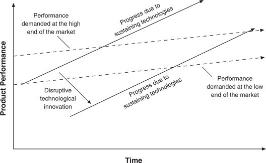

The second element of the failure framework, the observation that technologies can progress faster than market demand, illustrated in Figure I.1, means that in their efforts to provide better products than their competitors and earn higher prices and margins, suppliers often “overshoot” their market: They give customers more than they need or ultimately are willing to pay for. And more importantly, it means that disruptive technologies that may underperform today, relative to what users in the market demand, may be fully performance-competitive in that same market tomorrow.
Many who once needed mainframe computers for their data processing requirements, for example, no longer need or buy mainframes. Mainframe performance has surpassed the requirements of many original customers, who today find that much of what they need to do can be done on desktop machines linked to file servers. In other words, the needs of many computer users have increased more slowly than the rate of improvement provided by computer designers. Similarly, many shoppers who in 1965 felt they had to shop at department stores to be assured of quality and selection now satisfy those needs quite well at Target and Wal-Mart.
Figure I.1 The Impact of Sustaining and Disruptive Technological Change
